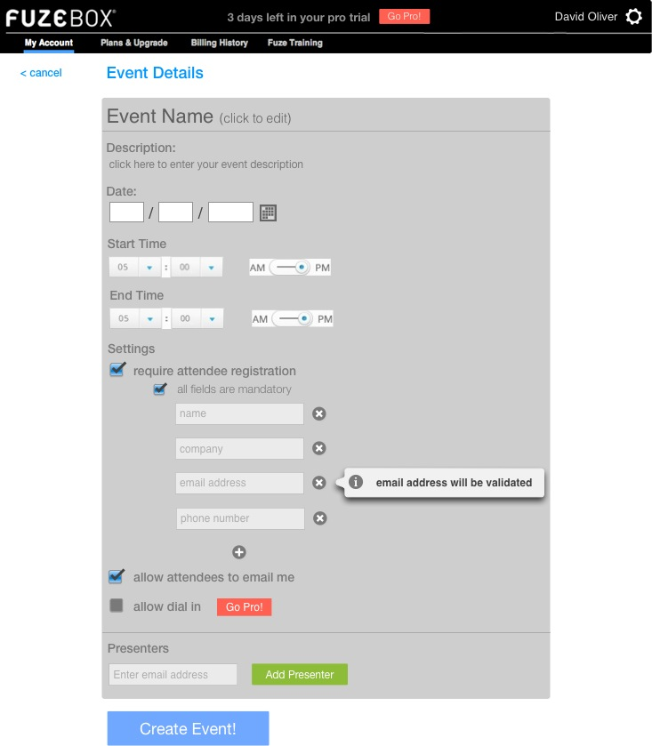

<map name="GraffleExport">
	<area shape=poly coords="270,622,273,622,273,619,270,619,270,616,267,616,267,619,264,619,264,622,267,622,267,625,270,625,270,622" href="create_presenter.html">
	<area shape=circle coords="268,621,10" href="create_presenter.html">
	<area shape=rect coords="283,746,390,770" href="create_presenter.html">
</map>

